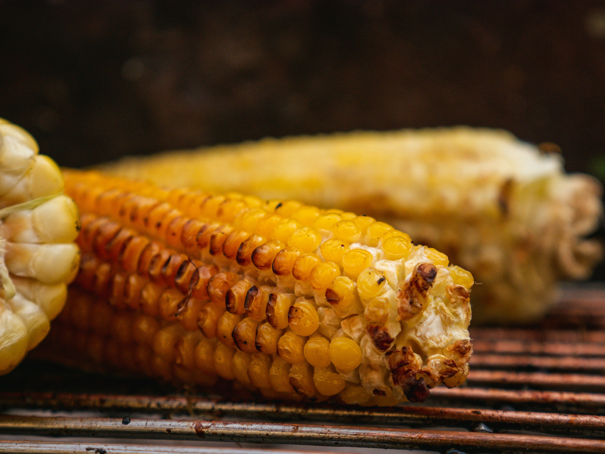

Corn on the Cob
Recipe taken from allrecipes.com

Description
This spicy corn on the cob is cooked on the grill with chili butter for a yummy side dish to any summer meal!
Ingredients
- 1 teaspoon chili powder
- 1/8 teaspoon dried oregano
- 1 pinch onion powder
- Cayenne pepper to taste
- Garlic powder to taste
- Salt and pepper to taste
- 1/2 cup butter, softened
- 6 ears corn, husked and cleaned
Steps
- Preheat the grill for medium-high heat.
- Mix chili powder, oregano, onion powder, cayenne pepper, garlic powder, salt, and pepper in a medium bowl; blend in softened butter. Spread butter mixture on each ear of corn, and place each one onto a piece of aluminum foil big enough to wrap like a burrito, twisting the ends to close.
- Place wrapped corn on the preheated grill, and cook until tender when poked with a fork, about 20 to 30 minutes. Turn corn occasionally during cooking.
Home